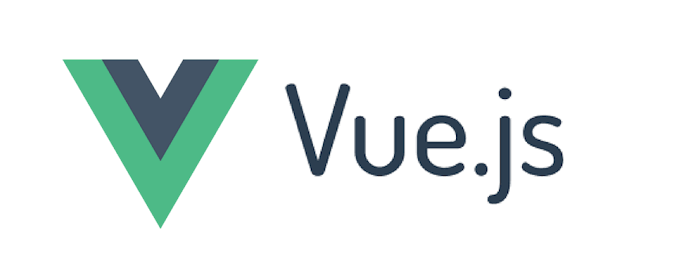

Vue.JS

The popular Javascript framework ‘Vue.js’ was created by Evan You
and used to develop interactive UIs (User Interfaces) (UIs) and
SPAs (Single-page applications). Vue.js is one of the best
JavaScript frameworks for creating a lightweight and adaptable
interactive UI elements. The MVVM model (Model View-View Model)
architecture pattern and its lightweight nature make Vue.js
extremely easy to implement.
HTML and CSS knowledge is required to use Vue.js. Also, Vue.js has
a core library focused solely on the view layer. Frameworks like
this can be seamlessly integrated into big projects for front-end
development without causing any problems or issues. 9GAG, GitLab,
Nintendo, Behance, and Laravel are some of the popular websites
and applications built using Vue.js.
Key Features:
- VueJS provides computed properties, which enable you to detect changes made to UI elements and perform calculations accordingly. You do not have to add any additional code to do this.
- VueJS comes with several built-in directives for performing various tasks on the frontend, such as v-show, v-if, v-else, v-bind, v-model, and v-on.
- Watchers in Vue.js allow you to watch or monitor a component and perform specified actions when its values change. This is a more general way to watch and respond to data changes in a Vue instance. It is particularly useful when performing asynchronous operations.
- VueJS components allow you to create custom elements that you can reuse in HTML.
- Various transitions can be applied to HTML elements when they are added/updated/removed from the DOM (Document Object Model).
Limitations:
- Lack of Support : Vue.js is a new language which has become popular in a short span of time but is not supported by a large community of active programmers. Moreover, the team that has developed Vue.js is also small resulting into the limited support. We can say that having a closed community is a disadvantage of this framework. Technology is evolving in nature, let’s keep the finger-crossed.
- Language Barriers : Language barrier is another limitation of Vue.js which is being cited by many experts. Its creators are Chinese-American and they prefer the Chinese language over any other, which is not used in most of the countries. The coding of the framework written in Chinese creates issues for non-China developers.
- Over Flexibility : In large projects where many developers are involved, the flexibility of Vue.js becomes an issue that can be sorted out if there is a large community present. There might be events when the over-flexibility of Vue.js can lead to more errors and make the project over complicated.
- Limited Plugins : Vue.js is new and still in the development phase so the support for many plugins is not available. But Vue.js can be combined with React or Angular to overcome this issue. To handle this situation developers switch to other languages.